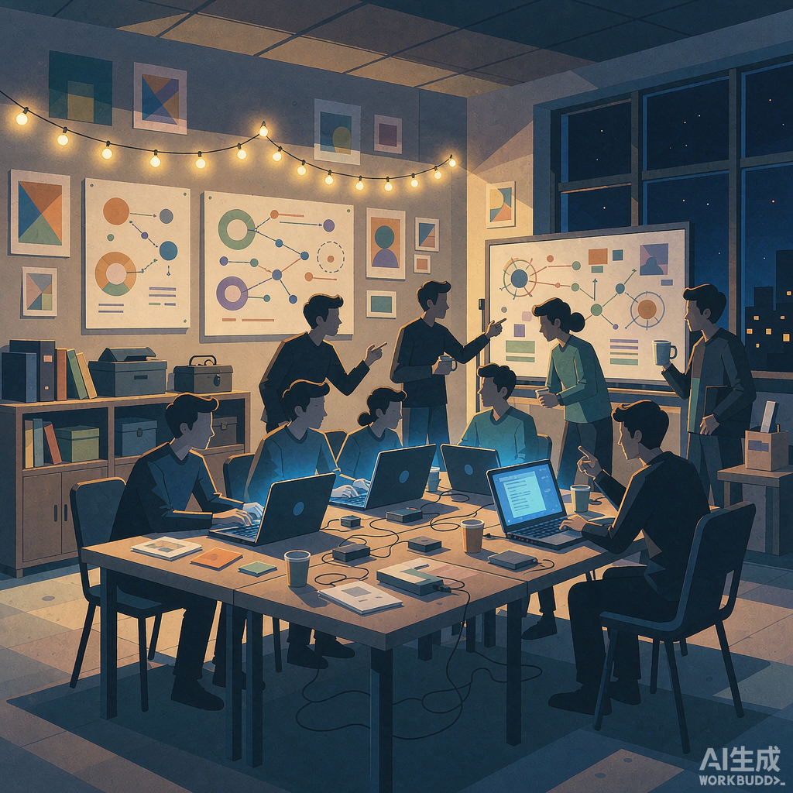

Growth · BD · AI Adoption
Marketing background, no engineering degree.
What I'm good at is making people actually adopt it — building communities from zero, closing partnerships, and sitting on-site until the solution is sold into the real workflow.
About
Robin Fang — Marketing, Zhongnan University of Economics and Law.
I don't write code. I make AI products get used by real people.
Over the past two years I've applied this in three places: AI open-source communities, AI adoption in traditional industries, and campus & content growth.
I don't position myself as technical. My value is being able to hear what the business is saying and what the product is saying — and make the two meet.
What I Do
Build communities from zero and turn strangers into repeat participants. Not with red packets, but with mechanism design.
On-site discovery, deal negotiation, private-channel conversion. I can sit with the owner and dig into real pain points, and I can send out a one-page deck that gets a reply.
Sponsorship deals, campus alliances, hundred-person events. Resources don't show up on their own; you go get them.
A full pipeline for WeChat / Xiaohongshu / short video: topic → production → publishing → review, with standards and data gates at every step.
Leading technical teams without a technical background: translating fuzzy requirements into shippable products, turning a loose group into a team that delivers on cadence.
Numbers
Experience
Client and institution names are intentionally generic.
Core Operator
Project Partner (FDE)

Site Lead
Marketing Intern
Co-founder
How I Work
Off-site, you only see the workflow people want you to see.
Team-up mechanics, content state machines, data gates. Let the system run; don't babysit it.
Efficiency gains without a baseline are self-congratulation.
Actively seek the opposing view on important calls.
Connecting engineers and business, translating needs into product: that is the skill.
Thinking
Execution can be replaced. Judgment can't. This is where I differ from someone who is simply good with AI tools.
AI summaries now appear in 43% of search results, up from 15% in a year. The question is no longer "what rank am I" but "will the AI cite me."
Models will commoditize; the moat is orchestration, data, and workflows. That's why I bet on FDE, not on models.
Analyzing 800k work-related messages, OpenAI found 43.5% of job-specific queries involve another occupation's work, densest at the marketing × engineering intersection — exactly the two capabilities a solo delivery unit needs.
A solo operator's edge is client understanding, solution judgment, and trust — not "I can write all the code myself."
Today it's on-site work, relationships, and a one-page deck — almost zero paid. At scale you need marketing mix modeling to measure real channel ROI, instead of assuming the last campaign that worked will keep working.
Contact
If you're putting AI into real operations and need someone who understands both the business and the product — or you just want to talk growth — reach out.
weiyangfang950@gmail.com